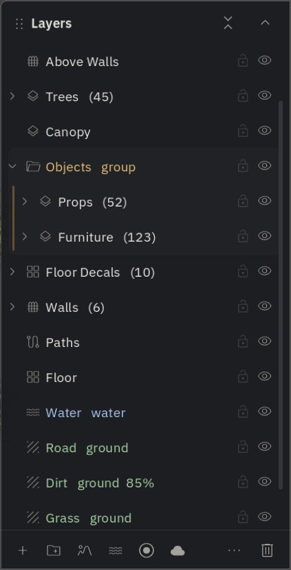

Layers
Everything on a map sits on a layer. The order of the layers is the order things are drawn, and it also decides what each lamp lights.
The Layers panel
- The top of the list is drawn last, over everything else.
- Drag a layer up or down to reorder it. Drag objects between layers too.
- The eye hides a layer, the lock stops it being changed. The number after a name is how many things it holds.
- Double-click a name to rename it. Right-click for copy, duplicate, move into a group, select everything on it, and new layers of each kind.
- Click the arrow on a layer to list what is on it; click a row to pick that one thing.
- The buttons along the bottom add a layer, a mask, and ground, water, void and mist layers. Roof and rain layers come from the row of buttons in the Paint tool (Add a paint layer).
- New objects and prefabs go on the layer you have picked. Pick a group and they go on its top object layer; pick a ground, water or mist layer and they go on the nearest object layer above it. A locked or hidden layer takes nothing (the status bar says why).
Dragging rows
- While you drag, a blue line shows where the row will land, indented to the level it lands on. A blue box means it goes inside that group (or layer).
- The top half of a row drops above it, the bottom half below. Passing over a group does not drop into it: rest on the middle of its row for a moment and the blue box appears.
- Rest on a closed group (or a layer's list of objects) for about a second and a half and it opens, so you can drop the row in among what it holds.
- Just under an open group's title is its first row. Below the last row of an open group, move the pointer left to drop at the group's own level instead.
- Groups stay open or closed as they were after a drop.
Working with several at once
- Ctrl+click adds a layer or object to the pick, or takes it out. Shift+click picks every row between the last click and this one. Ctrl+A picks every layer in the list, Esc lets go.
- Drag any picked row and they all move together, in the same order. Drop on the middle of a group to put them inside it.
- The eye, the lock, Copy, Duplicate, Delete and the moves all work on every picked layer.
- Keys while the panel is in use: Alt+Up / Alt+Down move, Alt+Right into the group above, Alt+Left out of its group, Ctrl+G group the picked layers, Ctrl+Shift+G ungroup, Ctrl+D duplicate, Ctrl+C / Ctrl+V copy and paste, F2 rename, Delete delete.
- Right-click picked objects on the map, then Move to layer > New layer... to give them a layer of their own.

Kinds of layer
| Kind | What it is for |
|---|---|
| Layer | Objects: furniture, props, trees, decals, walls, lights and labels. |
| Group | A folder of layers (the new map's Objects group holds Props and Furniture). Hide, lock or fade the whole group at once. |
| Ground | One painted texture (grass, dirt, flagstones). Stack several and paint where each shows. |
| Water | Painted water with depth, flow around rocks, foam and ripples. |
| Roof | Painted roof cover that keeps the sun and rain off, even while hidden. (For drawn roofs with slopes, use the Roofs tool.) |
| Void | The darkness around a cave. What it covers fades into nothing, and the open area is cave floor: no sun, lamps still work. |
| Rain | Falling rain, wet ground and puddles over everything below it. It covers the whole map until you paint it: pick the layer, use the Paint tool (B), Clear all, then paint where it rains (right-drag dries an area). It stays off water (drops make rings there), fire and waterfalls, runs down cliff faces, and wets roofs that show without puddles on them. Rooms of buildings and hidden roofs stay dry. |
| Mist / cloud | Drifting clouds that fill a painted shape. At the top it rolls over the scene; at the bottom it is a cloud sea under the map. |
Order matters
Layers draw from the bottom of the list up. Three things follow from that:
- What covers what. Canopy over Walls hides the wall tops under the trees.
- What a lamp lights. A lamp lights its own layer and every layer under it, never the layers above it. Details in Light and layer order.
- Where mist and rain sit. Mist at the top of the list drifts over everything; low in the list it shows only where the ground is cleared.
Opacity and blend modes
Object, group, ground, roof and mist layers, and most objects, have an opacity and a blend mode (Multiply, Screen, Overlay and nine more) in Properties. Water, void and rain layers have no blend; cliffs, waterfalls, spills, fire and buildings have none either, and drawn roofs offer Normal, Multiply, Add and Subtract (see Roof blend). Every layer panel ends with the same Layer block: name, opacity, blend, tint, lit by the sun, scenes and mask. A half-transparent group fades as one picture, so the things inside it do not show through each other.
Ground layers take a blend mode too, on the layer itself or from a group around it. Blended ground mixes with what is under it and is not lit again, like blended objects: Multiply reads right at night, Screen and Add stay bright in the dark.
Mist and fog take blend modes too: Screen for a glowing haze, Add for magic light, Multiply with a dark or coloured fog for smoke or poison gas (white fog on Multiply or Overlay barely shows). For fog, set the blend on the Fog group, not on the Fog emitters layer: that layer only holds the markers, and its Properties has Go to the fog.
Layer masks
A mask hides part of an object layer or a group without deleting anything, like a layer mask in Photoshop: half a statue buried in sand, a prop tucked under a cave wall, a rug cut off at a doorway, trees fading out at the map edge. White on the mask shows, black hides, grey is see-through.
Adding a mask
- Pick the layer or group and click Mask at the bottom of the Layers panel (next to New group). The mask starts showing everything and the Paint tool opens on it.
- Or right-click the layer > Add mask, or Properties > Mask > Add mask (starts with everything showing). To start with everything hidden, use the layer's right-click menu.
- Masks go on object layers and groups. Ground, water and void layers are already painted, so to mask them, put them in a group and mask the group.
Masking single objects or a few together
- Right-click an object, a wall piece or a building > Add mask to this object (or select it and click Mask). It moves onto its own masked layer just above its old one, with the same settings and a linked mask that follows it. The mask starts as a copy of the old layer's mask, so nothing changes until you paint. Good for blending one wall into the wall behind it.
- Several selected: Add mask to these gives them one shared mask. Group into a layer puts them on one new layer without a mask; then click Mask (with nothing selected on the map) to mask the whole group.
- The moved pieces draw over the rest of their old layer.
The thumbnails
A masked layer shows two thumbnails on its row with a chain between them, as in Photoshop:
- Layer thumbnail: click it to work on the layer's objects (move, place, select).
- Chain: gold means Linked. Click it to link or unlink.
- Mask thumbnail: a small black and white picture of the mask. Click it to paint the mask. A gold frame shows which one you are working on.
- Alt+click the mask thumbnail to see the mask in black and white over the map. Shift+click turns the mask off and on (an off mask shows a red cross).
- Drag the mask thumbnail onto another layer or group to move the mask there. Hold Ctrl as you drop to copy it instead.
Painting the mask
- While you paint a mask, the map shows red wherever the mask hides, so you can see exactly what is cut.
- Left-drag shows, right-drag hides. Soft brushes give soft edges; a hard brush gives a clean cut.
- The Paint panel adds Show all, Hide all, Invert, Black and white (or back to the red overlay) and Back to the layer.
How masks behave
- Linked (on by default): move, turn or scale everything on the layer together and the mask goes with it. Moving only some things leaves the mask where it is. On a group, select the group to move all of it with its mask. Unlink to move things under a mask that stays put.
- Masks stack: a mask on a group and masks on layers inside it all apply.
- Hidden parts cast no sun shadow, block no lamp light (props, walls and buildings) and make no shore in water, so a half-buried rock casts half a shadow and a buried stretch of wall lets lamp light through.
- Masks work on layers with a blend mode (Multiply, Screen and the rest) too.
- Invert, copy, paste and delete are on the layer's right-click menu. With the mask thumbnail picked (gold frame), Delete, the bin button or dragging the thumbnail onto the bin deletes only the mask, never the layer.
- Two things a mask does not change: a water layer cut by a group mask has no foam along the cut (erase the water itself where a shore should show), and the VTT export writes the full line of a masked wall.
Per-layer switches
Pick a layer and Properties shows its switches:
- Lit by the sun and Casts sun shadows. Layers named Paths, Floor, Decals, Rug, Water, Ground or Light start with Casts sun shadows off (the box says so): what is on them lies flat. Tick it to make them cast. An object there with a Height or Lift is still shaded at that height.
- Affects water: off for trees over a stream, so their trunks make no ripples. A single object can differ from its layer: pick it, then set Affects water under Sun in Properties (Same as layer, Yes or No). It only shows when the map has water.
- Sailing: for a ship at sea. Pick the ship (a building or a picture) and tick Under way in Properties. The water draws a bow wave, a foam line along the hull, a V of waves behind it and churned water astern, and the hull stops getting a beach round it. Drag the blue arrow to turn its heading; V lines sets how far the white lines of the V run before they fade; Speed 0 leaves it at anchor with just the foam line. Leave sea behind the stern for the wake to show.
- Roof (keeps the rain off).
- Ground layers stacked above objects (a layer of sand drifted over a dock, stairs or a wall) take the light of what they lie on: a wall top is bright, stair steps keep their shading, the sand sits in the shadows the ground is in. Next to building floors they skip the floor's contact shade so its edge does not show. Contact shade from things under it brings that shade back; Flat light (ignore what is under it) drops all shading from what is under the layer (it then also skips the shadows the ground around it is in, so a patch can look brighter than its surroundings). To hide an object's shape under sand cleanly, mask the object instead.
- A building hides what is drawn under it on its own layer from the sun, lamps and contact shade, like things on lower layers (a tower over a cliff casts no shadows of the cliff's plants onto its floor).
- Shown in (maps with more than one scene): tick the scenes a layer shows in. Rain and fog usually belong to one scene, such as a storm at night, while the ground shows in all of them. New rain and mist layers start in the scene you are in; a new scene made as a copy keeps the layers of the scene it was copied from. Deleting a scene deletes the layers that were only in it (Ctrl+Z brings them back).